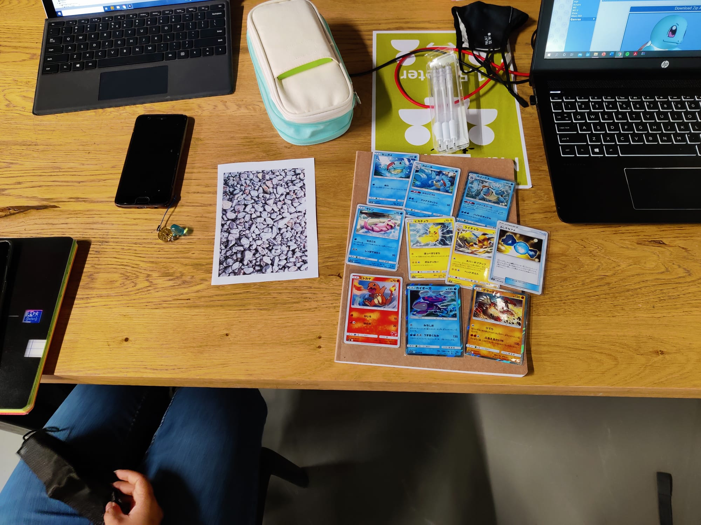
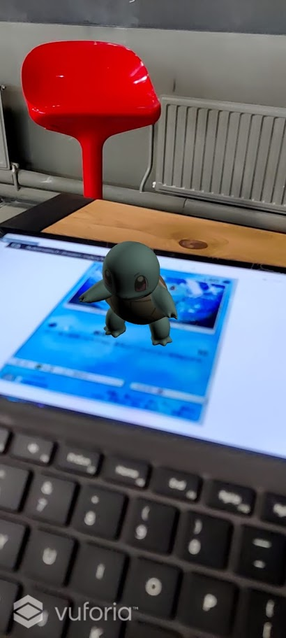
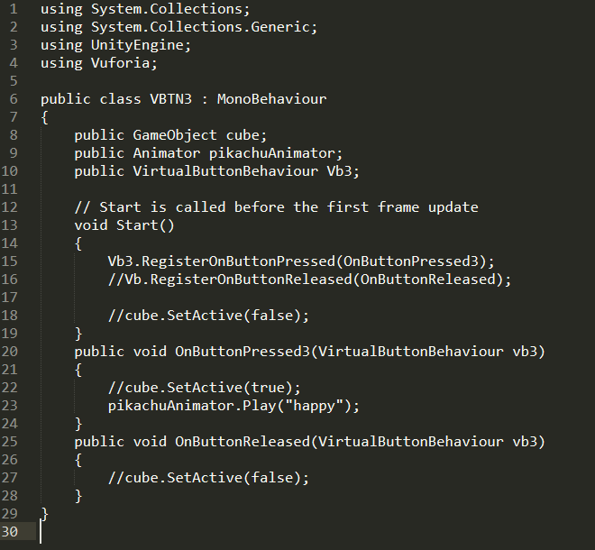
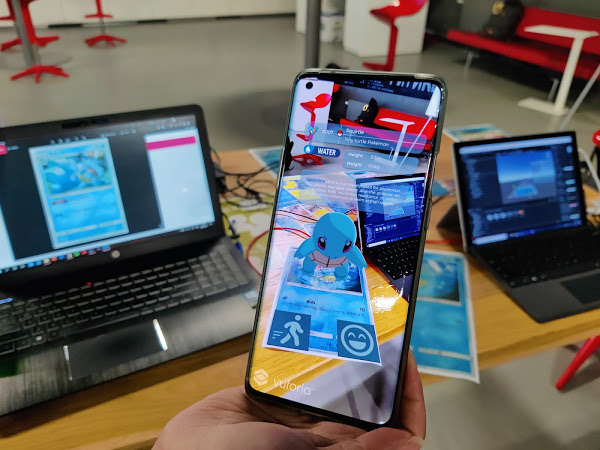
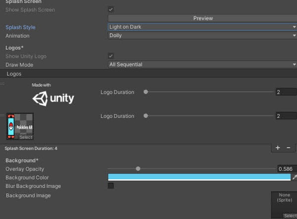

Brainstormen en ideeën verzinnen samen, hier hebben wij 3 verschillende concepten verzonnen.
Concept 1 AR Kirby
Bij dit concept was het doel om een soort diertje te hebben, hier hadden we voor Kirby gekozen. Dit is omdat Kirby van eten houdt en verschillende krachten kan krijgen door andere monsters op te eten. Kirby kan je dan eten geven door middel van andere AR cards van verschillend eten. Bijvoorbeeld een appel kaart, kersen kaart of een taart kaart.
Concept 2 VR Cooking
In VR Cooking kan je een VR bril op doen. Zodra je een bril op doet zie je een keuken om je heen. Door middel van controllers zie je je handen. Met je handen kan je verschillende objecten om je heen oppakken. Dit kan een mes zijn, pan, vlees, ei eigenlijk van alles wat je in een keuken kan vinden. In dit spel kan je verschillende recepten maken. Dit lijkt een beetje op het spel job simulator.
Concept 3 AR Pokédex
Dit is het concept wat wij gekozen hebben, hier kunnen de gebruikers door middel van een app een Pokémon kaart scannen met een telefoon. Vervolgens ziet de gebruiker de 3d model van de bijbehorende Pokémon en de Pokédex entry. Verder zullen de kaarten meer interactie krijgen. Dit werd later pas uitgewerkt.
Vervolgens hebben wij gekeken welke software nodig is om dit te kunnen ontwikkelen. Hier hebben wij gekozen voor Unity in combinatie met Vuforia. Verder hebben wij aan het eind van de dag gekeken welke Pokémon kaarten we wouden gebruiken zodat wij deze mee konden nemen voor dag 2.
Dag 2 op school


Begonnen met een aantal Pokémon kaarten om te zetten in targets voor de app door fotos van de kaarten te nemen. En een test gemaakt om te kijken of Unity met Vuforia werkte. De Pokémon models waren online te downloaden alleen waren deze niet geanimeerd. Deze hebben we wel gebruikt als tijdelijke model om te kijken of alles werkte.
Dag 3
De kaarten heb ik opnieuw ingescand met een printer, hierdoor is de kwaliteit van de afbeelding veel hoger dan voorheen. De oude afbeeldingen van de dag ervoor heb ik dus vervangen. Verder heb ik gekeken welke interactie mogelijkheden er waren. Hier kwamen er 2 opties naar voren.
optie 1: Voice commands.
Hier kan de gebruiker door middel van voice commands de Pokémon taken geven. Zoals jump, attack en run.
optie 2: AR Buttons.
Met AR buttons kan de gebruiker met zijn hand of vinger over een button hoveren, deze activeert vervolgens een taak. Hier kan dat ook jump, attack en run zijn.
Allereerst heb ik tutorials opgezocht naar beide opties. De optie met voice commands zag er wel het ingewikkeldst uit, maar ook het meest interactiefst.
Dag 4 op school
Hier hebben we meerdere Pokémon toegevoegd aan het concept. Hier hebben we gekeken of de animaties vloeiend werkte die mijn partner heeft gelinkt. Verder heb ik gekeken of de voice commands werkte op ons concept. Dit is uiteindelijk niet gelukt, doordat het niet lukte om een voice api te koppelen met Unity. Verder zijn de 3d models in Unity geïmporteerd die mijn partner heeft gemaakt. Deze modellen zijn wel geanimeerd en hadden een zogeheten “idle” animation, een Squirtle zou hier dan met zijn staart bewegen en ogen knipperen. Hierdoor lijkt de model veel meer in leven dan het vorig model.
Dag 5

In plaats van voice commands heb ik tutorials opgezocht van AR buttons, deze zijn ook ingebouwd in de Vuforia library. Hiervoor heb ik een script moeten schrijven die aan het model en button was gekoppeld. Hier hebben wij allereerst de happy animation toegevoegd. Zodra er over de happy button wordt gehoverd, doet Squirtle zijn happy animation. De button heb ik rechts onderin de kaart geplaatst. Hierdoor kan de camera snel herkennen of er iets over de button is en vervolgens het script uitvoeren. Deze button moet in de target worden geplaatst anders werkt het niet. De reden waarom we voor AR buttons hebben gekozen is omdat er dan meer AR interactie is dan met een button op het scherm.
Dag 6
De modellen waren bijna af, de laatste paar Pokémon zijn toegevoegd met de laatste animaties. Hier heb ik de modellen gekoppeld aan de bijbehorende Pokémon kaarten. Een probleem die wij zijn tegengekomen is dat dat holografische kaarten niet af te lezen zijn met een telefoon. Doordat de afbeelding constant veranderd is het voor de app niet mogelijk om een aantal Pokémon te gebruiken. Dit was echter niet een groot probleem aangezien we genoeg andere kaarten hadden om ons concept verder uit te werken.
De eerste AR button werkt nu helemaal, vervolgens is er een tweede
AR button toegevoegd. Dit is de AR button voor de run animation. Deze heeft mijn partner verder toegevoegd aan de script.
Dag 7&8 op school


De applicatie is in principe af, wij hebben de laatste paar dagen zitten testen. Dit kan bijvoorbeeld de lengte van de animaties zijn, grote van de models en een splash screen intro bij het opstarten van de app. Daarnaast is er een logo toegevoegd voor de app. Verder zijn wij gaan kijken voor enige bugs en of we alles net wat netter kunnen maken zoals de animaties.
Dag 9
Samen waren wij zeker dat wij klaar waren met de applicatie, de volgende dag vond de expo plaats. Dus zijn we gaan kijken wat wij wilden vertellen tijdens de expo en hoe de presentatie zou plaatsvinden. We hebben besloten om een live demo uit te voeren met de Unity demo, omdat het via Teams makkelijker zou zijn om onze applicatie te delen.